日期11 月 5–9 日 · 5 天 4 晚
A LITTLE ESCAPE TO YUNNAN
2026.11.05 — 11.09 · 五天四晚
去云南，
把日子过慢一点。
三个女生，从三座城市出发。
把相聚的时间，留给喜欢的风景、
一组好看的合照，和不赶时间的下午。
挑一段喜欢的旅程 ↗
郑州 / 福州 / 宁波 出发
洱海的风 · 雪山下的古镇 · 热带的绿
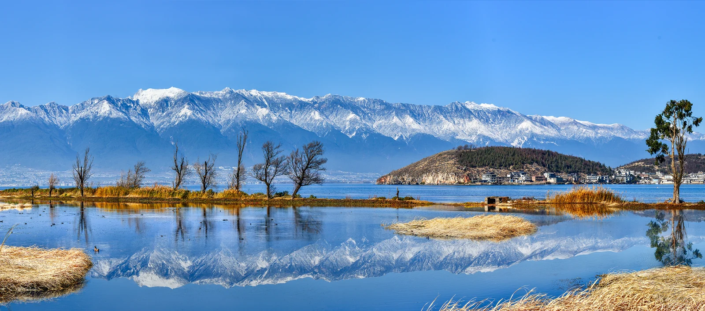
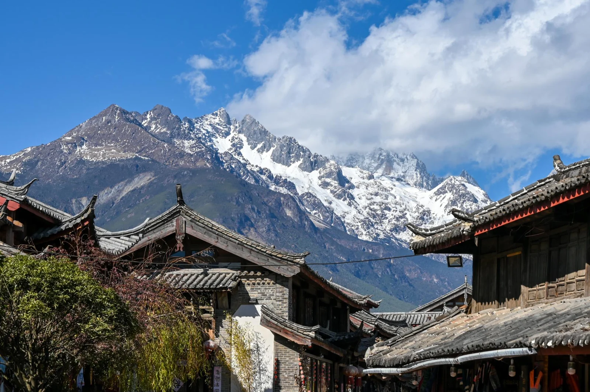
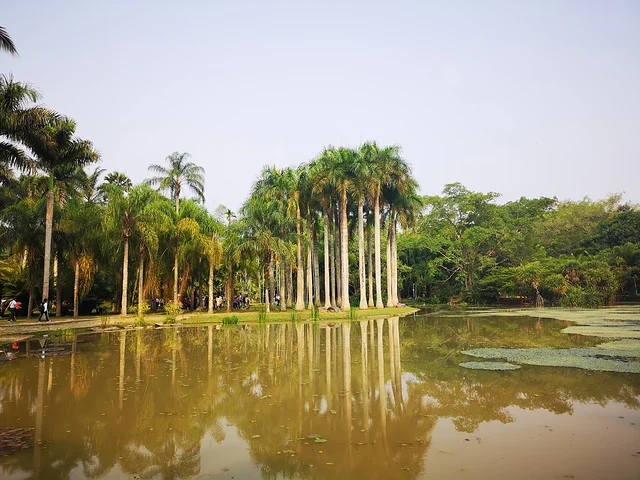
成员三位女生 · 三地出发
备选目的地联游 / 大理 / 丽江 / 版纳
旅行节奏妆照 · 古镇 · 慢游
CHOOSE YOUR KIND OF SLOW
四种过法，选你心动的云南。
四套独立方案，均按 5 天规划。
点开一张明信片，看看每天怎么过。
丽江＋大理联游 · 11 月 5–9 日 · 含泸沽湖两日一晚
先到湖边住一晚，
再去大理吹吹风。
三位女生，从郑州、福州、宁波出发。主线：丽江会合 → 泸沽湖 → 大理洱海 → 返程。沙溪列为延长一天的候补；联游转场比单城更多，三个完整白天的玩法不直接套用。
11.05丽江会合 · 住 1 晚
→11.06–07泸沽湖两日一晚 · 午后转场
→11.07–09大理洱海 · 住 2 晚
→11.09返程晚班机需核实
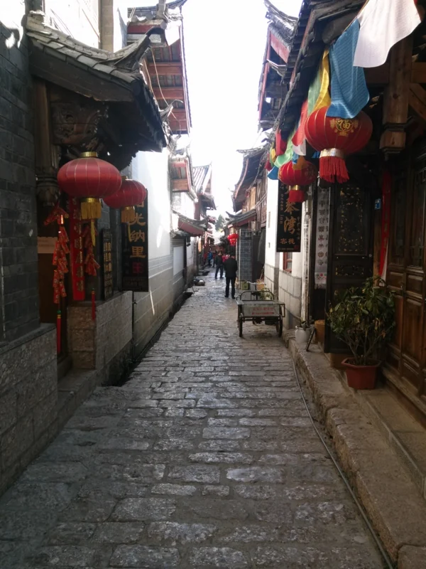
01 / 11 月 5 日 · 周四
在丽江会合，先休息一晚。
郑州 / 福州 / 宁波 → 丽江酒店；必要时经昆明动车转场
查看当天时间安排与交通
- 白天抵达
- 优先核对三地飞丽江的合适班次，再确认三人会合时间；目前没有已确认的直飞机票，不把三人同时落地当作前提。
- 落地后
- 丽江机场至古城外围网约车约 40–60 分钟。先到的人入住、吃饭、休息，按最晚抵达者的时间决定是否短逛。
- 如经昆明
- 按实际航班和动车衔接计算；昆明机场到车站按 60–90 分钟、昆明至丽江动车按约 3.5–4.5 小时规划，另留安检和晚点余量。
- 傍晚 / 晚间
- 较早到齐可在古城附近吃晚餐；晚到就直接休息，不在同一晚继续赶往泸沽湖。提前和酒店确认晚到入住、接送点。
住宿与边界住丽江古城外围、车能到门口的位置。若三人无法在 5 日晚会合，需要重新核算整个方案；当天不约正式妆照。
02 / 11 月 6 日 · 周五
出发泸沽湖，下午慢看两三处风景。
丽江酒店 → 泸沽湖住宿区域 → 里格 / 泸源崖等少量观景点 → 湖边酒店
查看当天时间安排与交通
- 08:30–09:00
- 早餐后出发。若前一晚深夜才到丽江，推迟出发并减少下午景点，不压缩睡眠硬赶行程。
- 上午转场
- 预约合规包车或正规客运，丽江到湖区按约 3.5–5 小时保守规划，依线路、酒店位置、道路与天气复核；途中留休息时间。
- 中午–下午
- 到湖区先午餐、入住或寄存行李。住大落水、蒗放等区域需与司机核对当天动线；不是每个湖岸景点都在步行范围。
- 下午慢游
- 里格观景台、泸源崖、住处附近湖岸择 2–3 处。若更喜欢草海与走婚桥，就用它替换观景台半日，不要求环湖每站都停。
- 晚间
- 湖边晚餐，摩梭文化体验或锅庄活动按正规场所当日安排自选；早晚冷，活动结束及时回酒店。
住宿与拍照住泸沽湖一晚，优先核对房间保暖、热水、行李与上下车位置。自然穿搭拍湖景和三人合照，复杂妆造不放在长途抵达日。
03 / 11 月 7 日 · 周六
上午游船，午后去大理。
泸沽湖酒店 / 正规码头 → 湖区午餐 → 包车到大理古城外围酒店
查看当天时间安排与交通
- 08:30–10:30
- 早餐后，天气和运营允许时去正规码头坐猪槽船。含候船与拍照先留约 1–1.5 小时；如风雨影响运行，就改湖边散步、咖啡。
- 10:30–12:00
- 住处附近短逛、取行李、午餐。不要在离开上午再塞女神山索道或跨湖远端点位。
- 13:00–14:00
- 乘提前约好的合规车辆前往大理，约定清楚是否直达酒店、行李容量、途中休息、费用与延时规则。
- 傍晚–晚间
- 泸沽湖至大理先按约 5–6 小时保守预留，司机按两端酒店和当日路况再核实。约 18:00–20:00 抵达仅为规划目标，不是班车时刻。
- 到大理后
- 入住、附近晚餐、休息。不要再约正式拍摄或安排远郊夜游。
时间说明这叫“两天一晚湖区游”，包括进出交通，不是两个完整游玩白天。若要湖边两个完整白天，需要提前抵达或延长行程。
04 / 11 月 8 日 · 周日
洱海短骑，把下午留给咖啡。
古城酒店 → 龙龛附近 → 往才村方向短段骑行 / 散步 → 湖边午餐 → 酒店
查看当天时间安排与交通
- 09:00–10:00
- 慢早餐后打车至海西廊道外围，按约 20–30 分钟规划，具体看酒店和入口。预报有转雨趋势，出门先看短时天气。
- 10:00–12:00
- 核对准入、计费和还车点后短骑或散步，骑行本身控制约 1–1.5 小时。停好车再拍照，累了折返，风雨明显就取消骑行。
- 12:00–15:00
- 村里午餐、湖边咖啡或回酒店休息。下午视天气决定是否继续短逛，不以完成 S 弯或环湖为目标。
- 想改海东
- 整天替换为文笔村＋小普陀岸边等两站包车，不能骑完海西再加海东；下雨、能见度差时优先减少公路行程。
- 晚间
- 古城附近晚餐，收行李、核对次日航班与动车。
妆照取舍本版当天给洱海，没有额外留出三人正式妆照所需约 5–7 小时。若妆照是必做项目，整天替换洱海，或另加一天；不硬塞半天。
05 / 11 月 9 日 · 周一
慢早餐后返程，不再去远郊。
大理酒店 → 大理机场；或大理站 → 昆明指定车站 → 长水机场 → 各自回家
查看当天时间安排与交通
- 08:30–10:00
- 早餐、酒店附近买少量伴手礼；目前预报有雨且降温，不把古城漫步设为必须完成的项目。
- 若从大理直飞
- 先核实三人各自的可售返程班次，再倒排送机；酒店至机场按实时导航和交通缓冲安排，至少提前 2 小时到机场。
- 若经昆明返程
- 参考 10:30–11:00 前后退房出发去大理站，选择能在 15:00 前后到昆明的动车。不是指定车次，必须按实际车票重排。
- 昆明至机场
- 从到达站去长水机场按 90–120 分钟留出站、等车与路况缓冲；争取至少起飞前 2 小时到机场。
- 晚班机目标
- 经昆明时优先核对 19:00 后、最好 20:00 左右起飞的航班；若实际航班更早，必须提前离开大理，取消上午短逛。
返程底线不从沙溪或泸沽湖直接赶当天昆明航班。若有列车或航班变动，先保交通，上午游览随时可删。
LUGU LAKE · TWO DAYS, ONE NIGHT
泸沽湖，两天可以这样玩。
推荐“少量观景点＋一次游船＋湖边休息”。两天一晚包含进出湖区交通，不追求把整圈景点和每个项目都做完。
分段环湖、拍照
里格观景台、泸源崖、尼赛等挑 2–3 处，按住宿位置串联。留半天预算，包车停正规点位，天色与水色以实际为准。
猪槽船游湖
选正规码头，含候船先留约 1–1.5 小时；航线、时长、是否上岛和费用先问清。穿救生衣，遇风雨或停航就改散步，不保证特定花期与候鸟。
草海、走婚桥
建议停留约 1–2 小时；它在湖区另一片区域，需要把往返车程算进去。用来替换半日观景台路线，不直接加在离湖上午。
湖边咖啡、闺蜜合照
住处附近选一段允许停留的湖岸，自然穿搭互拍，随时回酒店。冷、风大或下雨时，留在湖景咖啡馆也可以。
摩梭文化体验、锅庄
正规场所按当天场次自选，费用与活动内容先确认；尊重当地习俗和居民，拍人像先征得同意。不把晚会当作每天必有的固定节目。
格姆女神山索道
喜欢登高可另留半天，出发前确认运行和天气。它是替换项，不塞入第二天上午，也不和长途转大理一起赶。
LEAVE ROOM · 行程取舍
沙溪、妆照，怎么留位置？
原定五天里，湖区两日与跨城转场已占去时间。下面是可选改版，不是主线之外自动增加的安排。
泸沽湖＋洱海
保留上面的 5–9 日主线，沙溪留候补。日常穿搭互拍为主，11 月 8 日只选海西或海东一条线。
查看海西骑行 / 海东自驾对比 ↗再给沙溪完整一天
如果可以改成 11 月 10 日返程，9 日大理往返沙溪、10 日返程，需增加一晚住宿并重查机票。沙溪往返按约 5–6 小时规划；9–11 日降雨趋势下，不承诺该日适合拍照，按临近预报调整。
查看沙溪一天的景点与交通 ↗正式拍摄要单独留时段
三人选衣、化妆、个人照和合照预留约 5–7 小时。五天内可以用 8 日古城妆照替换洱海，想两者都保留就加一天或减少湖区停留；不默认“顺手拍完”。
古城做正式造型，泸沽湖、洱海、沙溪穿自己的衣服拍自然照。看同一摄影师真实客片，确认合照、精修、原片、加价与雨天改期。
只有提前到湖区，才考虑五天压缩版：若三人 5 日很早抵达且当天能到泸沽湖，可再核算“5–6 日湖区、6 日下午去大理、7 日洱海、8 日沙溪、9 日返程”。这不是两个完整湖区白天，且首日很赶；三人下午昆明会合的情况下不采用。
WEATHER NOTES · 快照而非实时
白天晒太阳，早晚要保暖。
以下为 2026 年 11 月 3 日查询的中国天气网页面快照，温度按最低—最高排列；大理、丽江城市页显示 3 日预报，泸沽湖景区页标注 2 日更新。不能用丽江城区温度代替湖区，更不能套用到雪山高处。
| 日期 | 大理城区 | 丽江城区 | 泸沽湖景区 |
|---|---|---|---|
| 11.05 | 多云 10–24℃ | 晴 8–23℃ | 多云转晴 3–20℃ |
| 11.06 | 晴 11–24℃ | 晴 8–23℃ | 晴转小雨 2–20℃ |
| 11.07 | 晴 9–24℃ | 晴 7–22℃ | 晴转小雨 1–19℃ |
| 11.08 | 晴转小雨 10–22℃ | 晴转小雨 6–21℃ | 小雨 2–17℃ |
| 11.09 | 中雨转小雨 8–12℃ | 中雨 9–16℃ | 本次未获取到同版逐日预报 |
对路线的影响
- 湖区项目和妆照优先选天气较好的时段，船与索道以当天运行情况为准；不能仅凭日最高温判断穿衣。
- 8 日洱海尽量上午短游，下午保留机动；9 日以返程为主，不再加沙溪或其他远郊。
- 省级趋势预测提示 9–11 日可能有较大范围降雨。延长到六天也要重新看天气，而不是默认多一天就一定适合沙溪。
古城与拍照
分层穿，方便脱穿
长袖、薄针织或衬衫，加能随时穿脱的外套；拍裙装随身带保暖层。带防晒、墨镜、润唇膏与保湿用品。
湖区早晚
轻羽绒与防风层
清晨、夜间、乘船准备轻羽绒或保暖外套，长裤与围巾。湖区最低温快照只有几度，不能只按白天约 20℃打包。
骑行与转场
防滑鞋、雨具
骑行优先防风外套，衣摆、围巾和包带收好；雨天缩短活动。长途包车留休息时间，不为赶日落压缩路程缓冲。
天气与交通复核入口
5 天 4 晚 · 3 天完整游玩
把时间，
留给喜欢的风景。
2026.11.05–11.09｜昆明进出，大理连住四晚。每天一个主要区域，拍照、咖啡和休息都留出时间。
01 / 11 月 5 日 · 周四
昆明会合，晚上住进大理。
郑州 / 福州 / 宁波 → 昆明长水机场 → 动车出发站 → 大理站 → 酒店
查看当天时间安排与交通
- 中午–15:30
- 三人陆续落地。先到的人在机场午餐、休息；福州此前查到的 15:05 抵达时间仅作会合参考。
- 15:30–16:15
- 取行李、会合，买水和途中简餐。
- 16:15–17:45
- 合乘网约车到车票指定的昆明站或昆明南站，按 60–90 分钟预留车程。
- 18:30 以后
- 乘动车到大理，规划按约 2–2.5 小时；与最晚航班落地至少间隔 3.5 小时，具体以实际班次为准。
- 约 21:30–22:30
- 大理站打车约 45–60 分钟到古城外围酒店，简单吃饭、入住休息。
当天重点 只完成会合和转场，不约拍摄。若有人傍晚才到昆明，需要调整首晚住宿与次日安排。
02 / 11 月 6 日 · 周五
白族风格妆照，拍一组闺蜜纪念。
工作室 → 大理古城南门周边 → 白墙街巷 → 人民路
查看当天时间安排与交通
- 09:00–10:00
- 慢早餐，饵丝或米线；步行或短途打车到工作室。
- 10:00–13:00
- 选衣、妆造。每人先选一套服装、一个造型，提前确认化妆师人数和三人完成时间。
- 13:00–14:00
- 简单午餐、补妆，摄影师按光线与人流确定集中拍摄区域。
- 14:00–17:00
- 古城旅拍：分别拍个人照，再拍三人合照。街巷间以步行为主。
- 17:00 以后
- 还服装、卸妆、回酒店休息；18:30 后吃白族家常菜，有精力再逛人民路。
出片重点 同系列不同颜色的白族风格服饰，参考真实客片选妆容。当天不再加洱海远景拍摄。
03 / 11 月 7 日 · 周六
洱海西岸，短段骑行和湖边下午茶。
龙龛码头附近 → 往才村方向短段骑行 / 散步 → 湖边下午茶
查看当天时间安排与交通
- 09:00–10:30
- 早餐后穿自己的日常衣服，网约车约 20–30 分钟到龙龛附近廊道入口。
- 10:30–12:00
- 现场核对租车准入与还车规则后，往才村方向短段骑行；骑骑停停约 1–1.5 小时，累了折返或改散步，不追求骑完海西。
- 12:00–13:00
- 村里午餐，尝试砂锅鱼等当地家常菜。
- 13:00–15:00
- 找喜欢的湖边咖啡馆，休息、看风景，拍窗景和三人自然合照。
- 15:00–17:00
- 继续在附近慢逛；想换场再打车到才村外围，不要求沿廊道走完全程。
- 17:00 以后
- 打车回酒店休息，晚餐自由选择。
出片重点 奶油色、浅蓝、棕色日常穿搭；湖岸、树影和窗景。车辆停廊道外围，骑行先核对准入与还车规则；海鸥、叶色和晴天不保证。对比海西骑行与海东自驾 ↗
ERHAI · TWO WAYS TO WANDER
海西骑行，还是海东自驾？
11 月 7 日的两种过法。保留沙溪的情况下，选一条就好；两岸都想玩，需要替换另一天或延长行程。
给你们的建议：海西短段骑行优先
你们住古城附近，想悠闲、拍闺蜜照，海西更方便随时停下来。若更想拍苍山洱海大景、不想骑车，改选海东两站包车；自驾会让一人承担驾驶和停车，三人都想轻松拍照时可比较包车报价。
| 比较 | 海西 · 骑行 / 散步 | 海东 · 自驾 / 包车 |
|---|---|---|
| 风景 | 近水廊道、湿地、村落与树影，适合自然人像。 | 湖面、山景和高低视角，更适合拍苍山洱海大景。 |
| 优点 | 短段可进可退，少找停车位，拍照和咖啡更容易穿插。 | 不用连续骑车，带衣服和行李方便，能在不同观景点切换。 |
| 缺点 | 风、日晒与人流影响体验；骑得越远，返程和还车越费心。 | 要跨岸转场、找停车位；有弯坡与混行车流，驾驶者需要专心开车。 |
| 留多久 | 建议半天到一天；骑行本身控制约 1–1.5 小时，剩下时间拍照、吃饭。 | 建议完整一天；只挑 2–3 个点，把跨岸、停车和步行时间算进去。 |
| 费用构成 | 往返接送＋租车 / 观光车＋餐饮。扫码计时、还车点和调度费须先看清。 | 租车＋保险＋油 / 电＋停车，或包车报价；商业拍摄场地、咖啡另算。 |
| 光线 | 龙龛可作日出候选，但本次不强制早起；白天拍树影、湖边生活感。 | 面对苍山的观景点可等候日落，但不为夕阳耽误返程，阴天也要准备替代拍法。 |
方案 A · 本次优先
海西：只骑一段，也算好好玩过。
古城酒店 → 车到龙龛外围 → 往才村方向骑骑停停 → 按还车规则结束 → 咖啡 / 午餐 → 回酒店
打卡点怎么挑
- 龙龛码头附近｜优先拍湖面、树影与开阔岸线；能见度和树叶颜色随天气、季节变化，不保证红杉、海鸥同时出现。
- 才村周边｜与龙龛搭配选一段允许停留的廊道，拍骑行感、湖边散步和三人合照；午餐回村里找，不只靠路边零食。
- 磻溪 S 弯｜替换选项喜欢弯道构图可另选这一段作起点；若人多，附近允许通行的湖岸也可拍，不把它当作龙龛后的必加点。
- 廊桥、海舌 / 喜洲方向｜另一天再考虑属于向北延伸的候选，别把一长串机位当成紧挨着。海舌开放与预约另行核对，本次短线不排。
怎么骑更悠闲
早餐后约 10:00 到湖边，租车前试刹车、车座和变速；把纯骑行控制在约 1–1.5 小时，拍照与喝咖啡另留时间。若必须原点还车，出发前就设折返时间；不熟练的人直接步行，三人不必为了同步都租车。
避雷点
- 外租车不等于廊道可用车。不要先租电动车，再到入口碰运气。官方回复说明，廊道内有统一运营的扫码自行车、共享电动自行车；机动车及未经批准的经营性非机动车不得驶入和停放，具体按入口及运营方规则核对。
- 鲜花车、双人车先问用途与准入。区分拍照道具和正常骑行车辆，确认押金、计时、原点还车还是定点还车；不能还车就不要直接打车离开。
- 停下来再拍。不要边骑边自拍、三人并排占满道路；长裙、围巾和包带收好，避免卷入车轮。
- 别把全环湖当休闲骑行。人多、风大或下雨就缩短线路；不为打卡下水、踩湿地、投喂候鸟。
通行规则参考：大理州洱海管理局负责人答复（加油大理转载，2026 年 8 月）↗；现场规则与计费需出发前复核。
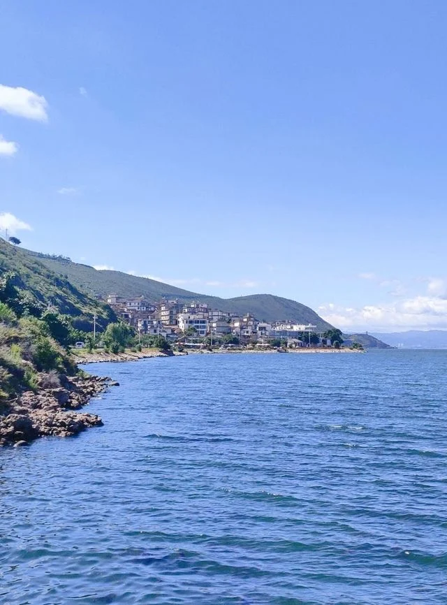
方案 B · 替换洱海日
海东：少停几站，多看一会儿。
轻松版：古城酒店 → 文笔村 → 小普陀岸边 → 导航返酒店。双廊可替换其中一站，具体走法按停车与实时路况调整。
打卡点怎么挑
- 文笔村｜优先选有合法停车位的观景点、村内开放区域或咖啡馆，看湖岸与苍山方向；彩虹公路是通行道路，不在车道中央摆拍。
- 挖色 / 小普陀岸边｜优先找正规停车点后步行，拍小岛、湖面与岸线；不必为完成打卡临时加船游，上岛另核船票和运行条件。
- 双廊古镇｜喜欢古镇就替换一站适合湖边街巷、露台和慢午餐。车停外围，古镇内步行；南诏风情岛、特定院落或餐厅消费不能当成整座古镇的统一门票。
- 理想邦｜喜欢建筑再选更偏商业建筑与旅拍场景，不是天然湖岸。咖啡、机位、接驳、停车是否收费分别确认，不因为“网红”就挤进当天。
怎么走更悠闲
按 09:30 左右从古城出发、17:00–18:00 左右回酒店规划，约 6–8 小时是含转场与停车的时间预算，不是已核定车程。文笔＋小普陀只留两站，中间吃饭、喝咖啡；想加双廊就替换一站，别再叠上海西骑行。
避雷点
- 不是整条路都能贴湖、随停随拍。环海东路有弯坡与穿村路段，拍照只进正规停车点，不占弯道、路肩或出入口。
- 新手不为照片租敞篷车或长途电动车。汽车自驾先看保险、免赔范围、车损与轮胎情况，留验车影像；电动车还要考虑续航、风与混行车流。
- 收费机位不等于公共景点。先问最低消费、拍摄时长、是否含摄影，以及停车和妆造是否另收费；不承诺“所有网红点都免费”。
- 鹿卧山洞穴、废墟和临崖小路不列入本次。不为找机位翻护栏或下陡坡；司机不边开车边拍，也不为了等日落疲劳夜驾。
道路提醒参考：新华网 · 环海东路弯坡、穿村与夜间行车提示（2026 年 9 月）↗。节假日交通管制有时效，不能直接套用到 11 月 7 日。
本次怎么落地：11 月 7 日默认海西短段骑行，11 月 8 日沙溪不变。要改海东，就整天替换洱海日；不把两岸、喜洲、双廊一次塞满。本文时间为规划预算，营业、租车准入、计费和路况以当日核实为准。
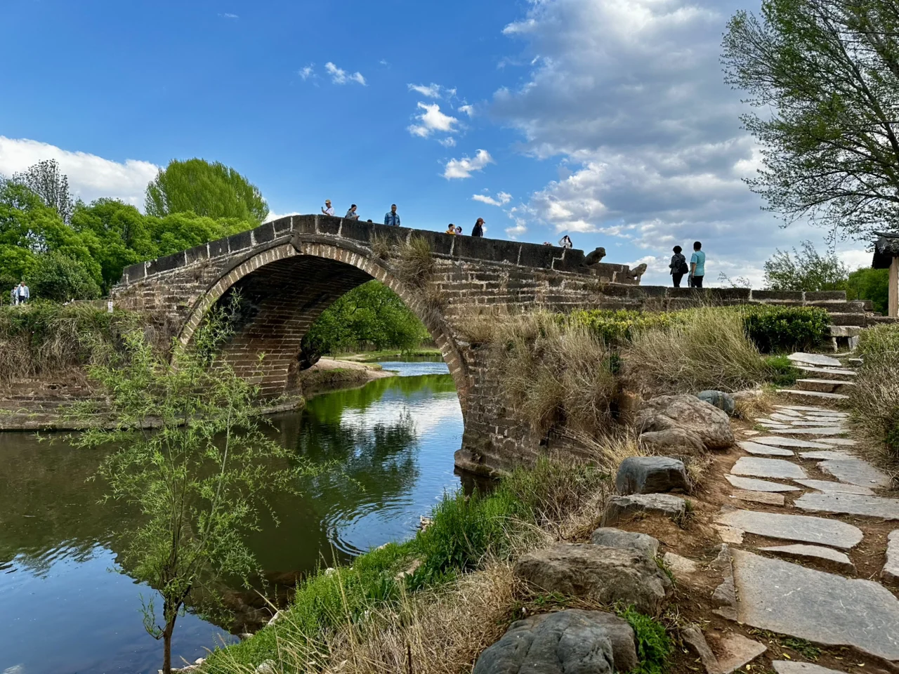
04 / 11 月 8 日 · 周日
沙溪古镇，走进茶马古道的旧时光。
大理酒店 → 寺登街 → 古戏台 → 东寨门 → 玉津桥 → 黑潓江畔 → 返回大理
查看当天时间安排与交通
- 07:30–08:30
- 早餐后出发。三人预约合规往返包车，提前确认酒店接送、车型、费用包含和司机等候时间。
- 08:30–11:30
- 乘车前往沙溪，单程按约 2.5–3 小时保守预留，依接送位置、路线与路况调整；途中可安排短暂休息。
- 11:30–12:30
- 古镇午餐，先休息再开始游览；车辆停外围，镇内步行。
- 12:30–14:00
- 寺登街、古戏台周边慢逛，拍石板街、老屋门窗与三人自然合照。
- 14:00–15:00
- 古镇咖啡或茶馆休息，不追逐排队机位。
- 15:00–16:30
- 经东寨门到玉津桥、黑潓江畔散步拍照。只走核心区域，不加远处书店或石宝山。
- 16:30–19:30
- 乘预约车辆返回大理酒店，按约 2.5–3 小时预留；晚餐选择酒店附近，饭后整理行李。
出片与节奏 奶油色、棕色或牛仔日常穿搭，拍古戏台、石桥与河岸。这天替换喜洲，不叠加游览；往返约 5–6 小时，是全程交通最多的一天。若更看重睡到自然醒，可恢复喜洲短途方案。当天不另约复杂妆造，也不为等日落推迟返程。
05 / 11 月 9 日 · 周一
留一个悠闲上午，晚上各自回家。
古城附近 → 大理站 → 昆明站 / 昆明南站 → 长水机场 → 郑州 / 福州 / 宁波
查看当天时间安排与交通
- 08:30–09:30
- 慢早餐，不再去远郊。
- 09:30–10:30
- 酒店附近散步、买鲜花饼，拍最后一组日常合照。
- 10:30–12:00
- 取行李退房，网约车到大理站，留足安检候车时间。
- 12:30 左右
- 选择动车回昆明，目标 15:00 前后到达，须按实际车票调整。
- 15:00–17:00
- 合乘网约车到机场，预留 90–120 分钟用于出站、候车与道路交通。
- 19:00 以后
- 分别乘晚班机返程，优先选择 20:00 左右起飞的班次；起飞前至少 2 小时到机场。
返程底线 若任一人的航班早于 19:00，取消古城短逛、提前坐动车。上午游览可删，机场缓冲不可压缩。
DALI · KEEP A LITTLE ROOM FOR SURPRISES
大理，还有这些备选。
原来的妆照、洱海、沙溪安排保留。下面用于替换，不是往五天里继续加点。游玩时长为建议预算，不含往返交通；票务、开放与接送须再确认。
怎么选更适合你们
- 想更轻松：11 月 8 日沙溪改凤阳邑半日＋休息，或周城扎染半日，减少远途转场。
- 想增加自然：用苍山替换沙溪或洱海一天，先选索道再排时间，三条索道不一次走完。
- 想增加建筑人文：三塔半日＋古城午餐；偏爱古城小吃则巍山与沙溪二选一。
- 都喜欢也别都塞：本次最多启用一套替换组合；妆照日和返程日继续留足余量。
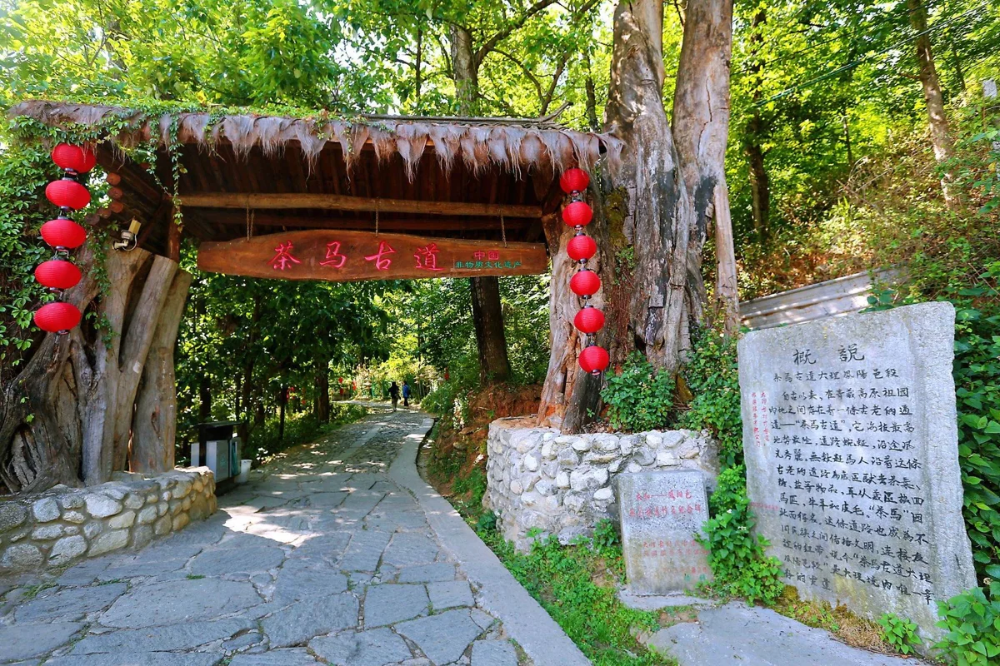
凤阳邑
沿茶马古道逛石巷、老院落和咖啡馆，适合想找“有风”村落氛围的一天。
- 怎么拍
- 米白、棕色、牛仔日常穿搭，拍老墙、门窗、走路与院落休息。
- 怎么换
- 想减少沙溪当天车程，可用凤阳邑半日＋回酒店休息，整天替换 11 月 8 日沙溪。
交通与游玩提醒
交通：古城外围网约车或包车到村外，进入古道后步行；接送点提前约在车辆可到的位置。
提醒：影视院落可能是营业场所，入内、预约与消费分别确认；不要默认所有院落都可免费进入，石板路穿舒适鞋。
高德地图 · 查看位置 ↗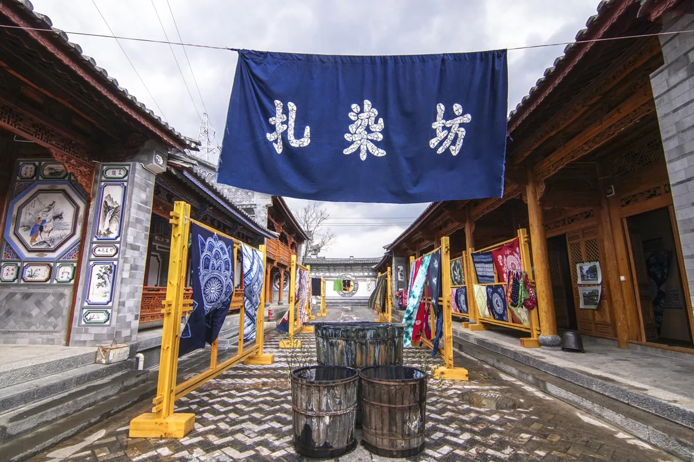
周城 · 白族扎染
白族村落慢逛，选一间工作坊体验扎染，三人各做一件自己的旅行纪念。
- 怎么拍
- 白色或浅色简洁穿搭，拍制作过程、蓝白布景与完成作品的合照。
- 怎么换
- 推荐替换 11 月 8 日沙溪日，留下下午休息；也可与喜洲重组成一天，但不再保留当天沙溪。
交通与游玩提醒
交通：古城外围出发预约往返车或包车；体验店位置、返程接送点一起确认，不沿洱海廊道骑长途赶课。
提醒：预约前问清作品规格、教学时长、材料、晾干和寄送费用。拍当地居民、师傅先征得同意，避免把体验排在赶车前。
高德地图 · 查看位置 ↗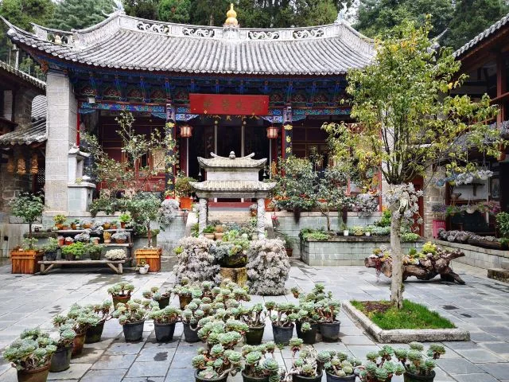
感通寺＋寂照庵
山林步道、寺院与植物院落，适合喜欢安静、愿意走一点上坡路的人。
- 怎么拍
- 素雅日常衣服，拍树影、院落细节；宗教活动与禁止拍摄的区域不取景。
- 怎么换
- 可整天替换沙溪：上午山林与院落，下午回酒店。若同日坐索道，需重新核算步行与排队时间。
交通与游玩提醒
交通：网约车至允许停车的山下入口，之后步行；感通寺、寂照庵与感通索道分别核对入口和动线。
提醒：有坡道和台阶，不穿高跟鞋。素斋时段、预约与当天接待情况需另核；到寺院参访穿着得体，不做复杂妆造摆拍。
高德地图 · 查看位置 ↗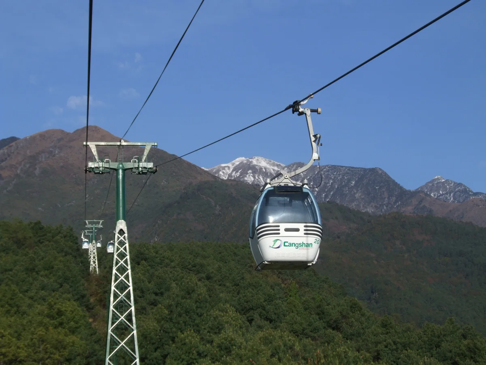
苍山索道
想补充森林、山景和高处看洱海的体验，可以专门选一天上苍山。
- 怎么拍
- 外套、舒适鞋，拍森林与山景。照片为感通索道风景参考，不代表所有索道的景观与高度。
- 怎么换
- 建议替换沙溪或洱海其中一天。偏轻松先比较感通线路，洗马潭单独预留更完整时间。
交通与游玩提醒
交通：网约车或预约接驳到所订索道下站；感通、中和、洗马潭是不同线路，出发前确认上下站和步行距离。
提醒：不能把三条索道当作同一张票或同一入口。高处更冷，运行受风与天气影响；不承诺 11 月花期、雪景或全线运行。
高德地图 · 查看位置 ↗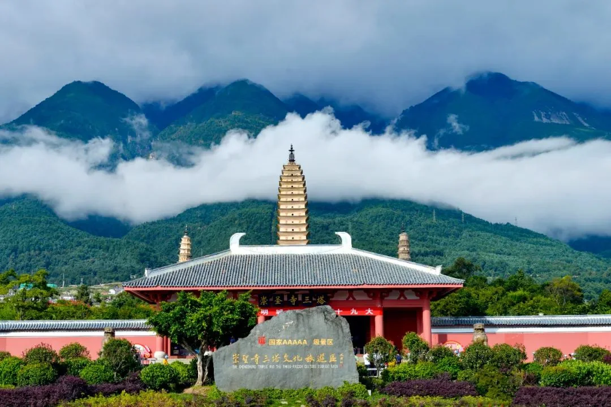
崇圣寺三塔
看三塔、寺院建筑和园林，适合喜欢历史、对称构图和正式旅行照片的人。
- 怎么拍
- 在允许拍照的区域拍建筑、院落与三人合照，简单穿搭比频繁换装更从容。
- 怎么换
- 可重排为三塔半日＋古城休息，替换沙溪日。不要塞进完整妆照日，也不放返程日。
交通与游玩提醒
交通：古城外围短途网约车至景区入口，内部步行；是否乘景区交通按现场路线和体力决定。
提醒：园区不等于只在门口拍三座塔，内部有步行与台阶；想参观殿堂需再留时间，门票与开放范围以官方公布为准。
高德地图 · 查看位置 ↗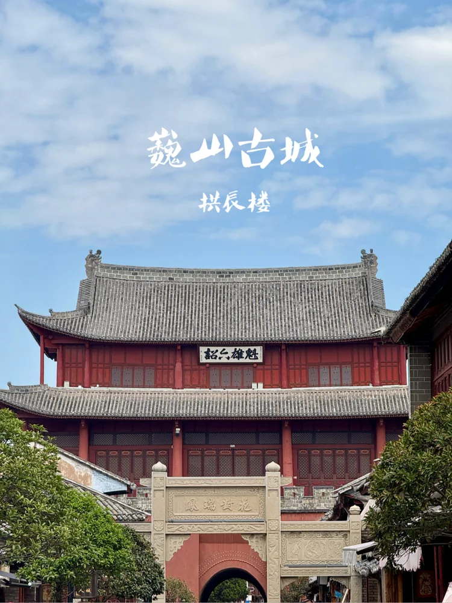
巍山古城
古城街巷、拱辰楼周边与地方小吃，适合把时间花在逛街、吃饭和看建筑的人。
- 怎么拍
- 棕色、米白或日常便装，拍街巷、城楼与吃早餐的生活感。
- 怎么换
- 与沙溪二选一，整天替换 11 月 8 日。两个古城不在同一条短途动线上，不安排同日串联。
交通与游玩提醒
交通：从大理古城预约往返包车较方便；若选择铁路，须把古城至大理站、巍山站至古城接驳一起核对。
提醒：不要只比较火车上的时间而漏算两端接驳。小吃少量分食、看清价格；是否可登楼、开放与收费单独确认。
高德地图 · 查看位置 ↗PHOTO NOTES · 三个人的照片分工
正式妆照在古城，风景日穿自己的衣服。
大理古城：11 月 6 日每人一套白族风格妆造，个人照＋三人合照，选衣、化妆、拍摄预留约 5–7 小时。
洱海：奶油色、浅蓝、牛仔日常穿搭，拍散步与骑行；头饰、长裙不要影响骑车。
沙溪 / 凤阳邑：米白、棕色与简单扎染元素，拍古镇生活感，不再加一次完整妆造。
选店：看同一摄影师的真实客片，尤其三人合照；问清传统服饰还是创意改良、精修与原片数量、配饰加价和天气改期。
连住四晚
住在古城外围
选车能到门口、步行约 10–15 分钟可到主街的位置。正规三床房或两间房，预订前核对床型、卫生间和晚到入住安排。
妆造预约
三人套餐逐项写清
确认每人的服装、精修与原片数量，以及三人合照、配饰、接送、交付时间和天气改期规则。拍摄当天留足 5–7 小时。
出发准备
按顺序锁定预订
先订三人的往返航班及两段动车，再订酒店和妆造。带外套、防晒、保湿用品、舒适鞋与充电宝；雨天可把妆照和洱海日对调。
出发前，再确认一次
丽江备选 · 5 天 4 晚 · 3 天完整游玩
古镇里拍照，
雪山下发呆。
2026.11.05–11.09｜三位女生，丽江连住四晚。古城妆造、白沙慢游、蓝月谷各用一天。这是一套独立备选，不与大理五天行程叠加。
01 / 11 月 5 日 · 周四
三地出发，到丽江会合。
郑州 / 福州 / 宁波 → 昆明长水机场 → 车票指定车站 → 丽江站 → 酒店
查看当天时间安排与交通
- 中午–15:30
- 三人在昆明机场陆续落地、取行李；先到的人午餐休息。此时间为订票目标，不是已确认的三人航班。
- 16:00–17:30
- 合乘网约车去动车出发站，车程规划预留 60–90 分钟；核对昆明站与昆明南站。
- 18:30 以后
- 若有合适可售动车，乘车至丽江，单程规划按 3.5–4.5 小时。动车与最晚航班落地至少间隔 3.5 小时，并留好途中简餐。
- 约 23:00–00:00
- 丽江站网约车约 30–50 分钟到酒店，具体到达时间随车次调整。提前确认深夜入住与接站，不安排古城夜游。
直飞替代 仅在确认三人各自有合适机票后启用：丽江机场到古城外围约 40–60 分钟，分别接机、酒店会合。若昆明晚间无合适动车，须调整首晚住宿与次日安排，不能默认仍有三个完整游玩日。
02 / 11 月 6 日 · 周五
睡饱再化妆，拍古城闺蜜照。
工作室 → 大研古城街巷 → 四方街周边 → 大水车附近（按实际机位取舍）
查看当天时间安排与交通
- 10:00–11:00
- 晚到后的恢复时间，睡到自然醒，早餐或早午餐。
- 11:00–14:00
- 步行或短途打车去工作室，选衣、妆造，分批吃简餐。提前确认三人能否并行化妆；若轮流做，提前到店或缩减拍摄场景。
- 14:00–17:00
- 集中在古城一个区域拍摄，先个人照，再拍三人合照。机位由摄影师根据当日光线、人流调整，不跨多个古镇赶场。
- 17:00–18:30
- 还衣服、卸妆、回酒店休息。
- 18:30 以后
- 古城外围晚餐，可选纳西家常菜或腊排骨火锅；有精神再短逛夜景。
妆照风格 优先看纳西风格或民族风旅拍的真实客片；创意造型与当地民族服饰要区分，选自己喜欢的即可。三人同系列不同配色，每人一套造型，留足 5–7 小时，不当天加雪山。
03 / 11 月 7 日 · 周六
白沙慢逛，把下午留给咖啡。
白沙古镇 → 老街与雪山景观咖啡馆 → 束河古镇（体力好再选）
查看当天时间安排与交通
- 09:30–11:00
- 慢早餐后打车去白沙，从大研古城外围出发约 30–45 分钟。
- 11:00–12:30
- 白沙老街散步，拍街巷、店门与三人日常穿搭。
- 12:30–14:00
- 白沙午餐，选一家喜欢的咖啡馆坐下来；雪山能见度取决于天气，不保证每个位置都能看见。
- 14:00–16:00
- 继续慢逛或喝咖啡；若想换场，可打车约 15–25 分钟去束河古镇，逛九鼎龙潭附近街巷。
- 16:00 以后
- 打车返回酒店；从白沙或束河返程约 20–45 分钟，按位置和路况调整。晚餐自由安排。
出片重点 奶油色、棕色或牛仔穿搭，古镇街景与天气允许时的雪山远景。束河是可删项；想更悠闲就只留白沙，不再加玉湖村或骑马。
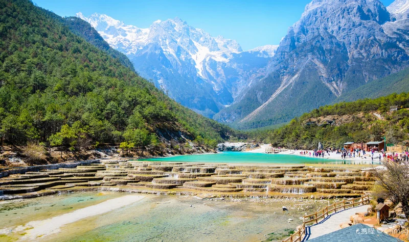
04 / 11 月 8 日 · 周日
甘海子、蓝月谷，留一天看山水。
酒店 → 玉龙雪山景区 → 甘海子开放区域 → 蓝月谷 → 酒店
查看当天时间安排与交通
- 08:00–09:30
- 早餐后预约包车去景区，单程约 50–80 分钟。带保暖外套、防晒、水与舒适鞋。
- 09:30–12:00
- 按门票和景区实际动线游览甘海子开放区域、蓝月谷；乘景区环保车接驳，谷内以步行为主，电瓶车按需要自选。
- 12:00–13:00
- 景区简餐和休息，不赶下一场预约。
- 13:00–14:30
- 湖边选一段慢逛、拍照，按天气和体力提前结束也可以；不要求走完所有湖段。
- 14:30–16:00
- 乘景区接驳车返回约定集合点，包车回酒店休息。
- 晚上
- 酒店附近晚餐、整理行李，次日返程。
预约与海拔 提前通过“玉龙雪山服务”等官方入口核对门票、环保车及开放情况；默认不含冰川公园大索道。若想坐索道，需要另核票源并重排当天，不能直接叠加。避免剧烈活动，身体不适时停止上行并及时求助；恶劣天气改为束河慢逛、咖啡馆休息。
05 / 11 月 9 日 · 周一
早餐后返昆明，晚班机各自回家。
酒店 → 丽江站 → 昆明站 / 昆明南站 → 长水机场 → 郑州 / 福州 / 宁波
查看当天时间安排与交通
- 07:30–08:30
- 早餐、检查行李、退房。昆明返程版本不安排上午远郊或付费拍摄。
- 08:30–09:30
- 网约车到丽江站，车程约 30–50 分钟，预留安检候车时间。
- 约 10:00 出发
- 选择回昆明的动车，目标 14:30 前到达；规划按 3.5–4.5 小时，须先核实实际车次和到达站。
- 14:30–16:30
- 合乘网约车到长水机场，按 90–120 分钟预留出站、候车与路况缓冲。
- 19:00 以后
- 分别搭乘晚班机，优先选择 20:00 左右起飞的班次，至少提前 2 小时到机场。若航班更早或动车到达更晚，必须相应提前离开丽江。
若确认从丽江直飞返程 可取消昆明段动车，上午增加酒店附近早餐、古城短逛，按各自航班倒排。机场车程约 40–60 分钟，加上提前至少 2 小时到机场的时间；直飞可售班次仍需核实。
LIJIANG · ANOTHER WAY TO SPEND THE DAY
丽江，按心情换一种过法。
同样保留三个完整游玩日。半天候选可重新组合，远郊与索道要整体重排。时长不含往返交通，天气、预约和体力都会影响安排。
怎么选更适合你们
- 优先推荐玉湖村：11 月 7 日用白沙＋玉湖村替换白沙＋可选束河；想更悠闲就只挑一个古村。
- 少坐车版本：黑龙潭＋木府＋午休，重排为市区慢游日；雨天也要核开放，不能当作全天室内路线。
- 想拍森林：11 月 8 日改云杉坪＋蓝月谷，先核索道票，删减原景区停留，不加冰川公园大索道。
- 早餐顺便逛：忠义市场当一顿早饭；狮子山只在愿意爬台阶、有体力时加，不压缩妆照时间。
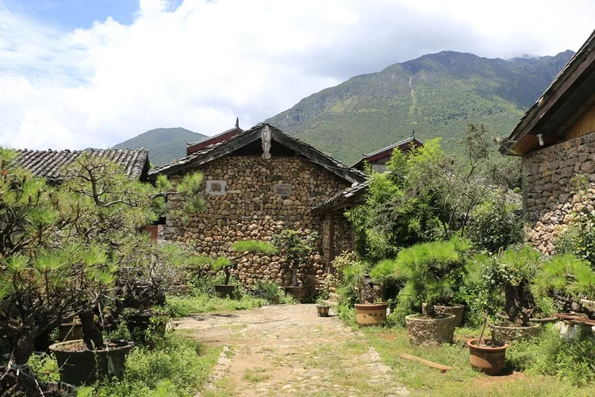
玉湖村
石头民居、巷道与天气允许时的雪山远景，给照片增加古村和自然的质感。
- 怎么拍
- 米白、棕色、牛仔都合适，以自然纪实为主，不另做一轮复杂妆造。
- 怎么换
- 11 月 7 日改为白沙＋玉湖村，取消束河；想更悠闲则只选白沙或玉湖一个。
交通与游玩提醒
交通：从大研古城外围预约包车或网约车往返；村内以步行为主，石头路不适合高跟鞋。
提醒：雪山能见度不保证；骑马不是逛村前提，如要体验需核路线、费用和防护。洛克故居等单独场馆另核开放与门票。
高德地图 · 查看位置 ↗黑龙潭公园
湖水、桥亭与园林，晴朗通透且水面平静时可寻找雪山倒影。
- 怎么拍
- 简洁便装拍园林人像、桥亭与水面，阴天就拍树影和建筑，不只盯着雪山机位。
- 怎么换
- 想少坐车时，可用黑龙潭＋古城午餐替换白沙日的一部分，或重排为黑龙潭＋木府的市区慢游日。
交通与游玩提醒
交通：古城外围短途网约车，或按住宿位置选择步行；不需要为这一项单独包一天车。
提醒：倒影受风、水面和能见度影响，不能保证。门票、古城相关票证及当日入园要求按官方确认，不套用旧攻略价格。
高德地图 · 查看位置 ↗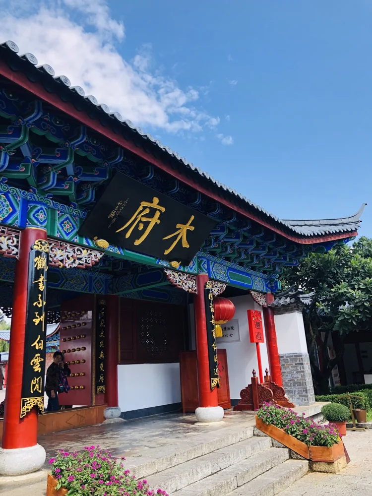
木府
了解纳西土司历史，逛建筑和院落，适合人文兴趣比打卡数量更重要的旅行。
- 怎么拍
- 普通穿搭拍院落、屋檐和建筑细节，摄影范围以现场规定为准。
- 怎么换
- 可与黑龙潭重排成一天，替换白沙日；如与古城妆照合并，必须先缩减拍摄时长或场景。
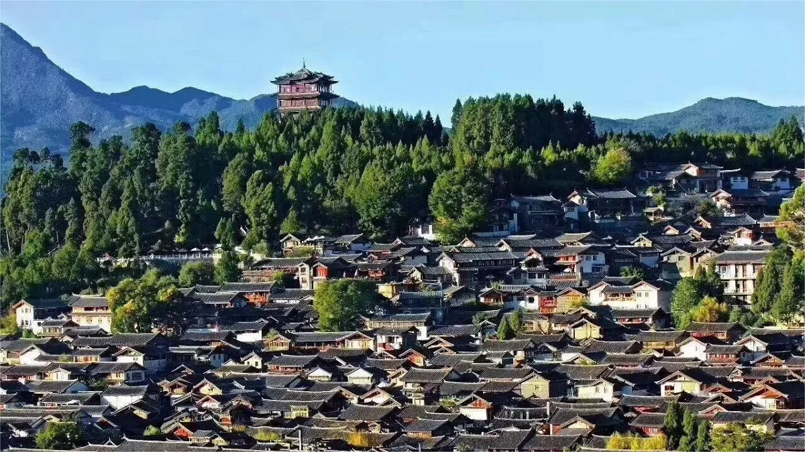
狮子山 · 万古楼周边
从高处看古城屋顶与街巷层次，适合喜欢建筑全景、愿意爬台阶的人。
- 怎么拍
- 屋顶全景与环境人像，穿防滑鞋；不去屋顶边缘或翻越护栏找机位。
- 怎么换
- 替换古城的一段自由闲逛即可；拍摄日若穿长裙或体力不足就不加，不能同时把全部古城景点塞满。
交通与游玩提醒
交通：从古城内步行上坡；根据酒店位置规划上山和下山方向，出租车不能替代最后一段登高步行。
提醒：有坡道台阶，万古楼、其他观景台与咖啡馆并非同一收费项目。傍晚游览先核关闭时间，不保证夜间都能登楼。
高德地图 · 查看位置 ↗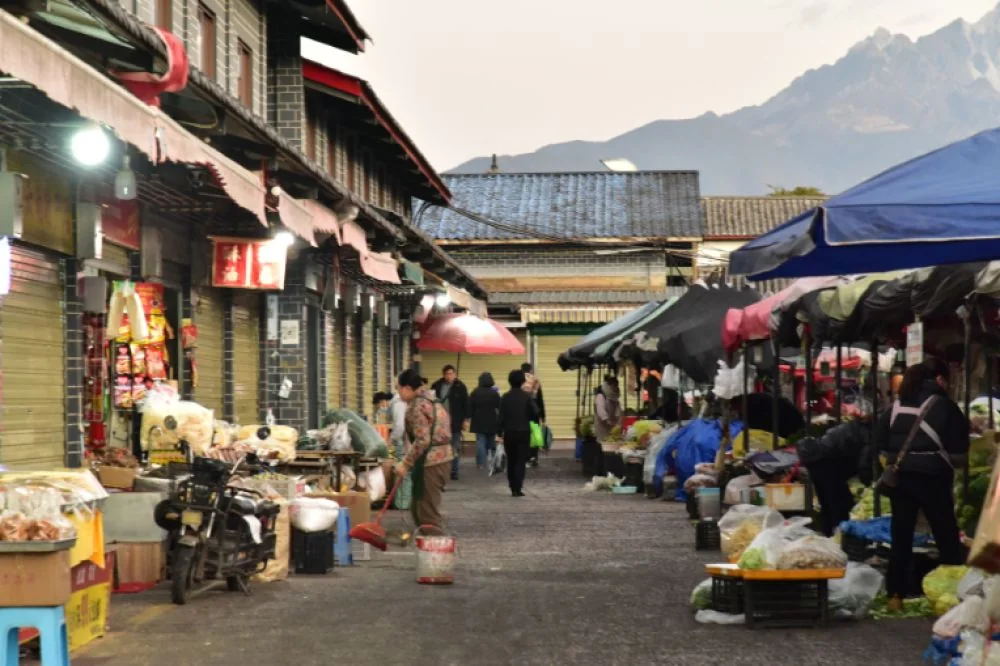
忠义市场
吃早餐、逛蔬果和小吃摊，感受本地日常，把它当一次早饭就很合适。
- 怎么拍
- 便装拍食物、摊位和走逛的生活照；拍摊主或居民先征得同意。
- 怎么换
- 优先放 11 月 7 日早餐后再去白沙；如前一晚晚到，11 月 6 日仍保留睡到自然醒，不硬赶早市。
交通与游玩提醒
交通：按住宿位置步行，或网约车到古城南侧外围再走进去。市场日常早市与夜间消费场景分别核对。
提醒：看清称重和价格，零食少量分食；不堵摊位通道拍照，不把采购大量易坏食物排在跨城返程前。
高德地图 · 查看位置 ↗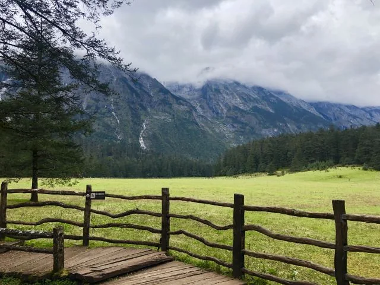
云杉坪
雪山景区里的森林、草甸与栈道，适合更喜欢森林氛围的人。时长需另计排队与接驳波动。
- 怎么拍
- 保暖外套和舒适鞋，拍树影、栈道与草甸边缘；11 月草色以实际为准，不承诺照片中的夏季绿。
- 怎么换
- 重排 11 月 8 日为云杉坪＋蓝月谷，删减甘海子停留，给接驳、午餐留时间；不再加冰川公园大索道。
交通与游玩提醒
交通：酒店包车至雪山景区，再按预约乘环保车、云杉坪索道，景内步行；索道票源需先核实。
提醒：景区门票、环保车和索道需分清。运行受天气影响，高海拔不剧烈活动；如天气差，改为市区慢游。
高德地图 · 查看位置 ↗PHOTO NOTES · 古城与古村拍出不同感觉
一套正式妆照，搭配两天自然穿搭。
丽江古城：正式民族风妆照选一个集中区域，纳西风格与创意民族风看客片区分；不跨古城、白沙、雪山三个场景赶拍。
白沙 / 玉湖：米白、棕色、牛仔，拍石巷、古村与天气允许时的雪山远景。三人互动比反复换造型更省时。
黑龙潭 / 木府：日常衣服拍园林、建筑与三人合照，场馆内按规定取景。
雪山 / 云杉坪：保暖、防滑和步行方便优先，发型与衣服不要影响活动；不给复杂妆造再加一次排队负担。
LONGER ESCAPES · 需要重排的长线
泸沽湖与虎跳峡，也先收进备选。
喜欢就用它替换原来的整天行程。泸沽湖需要改住宿；虎跳峡观景和徒步不是同一玩法，不能把两者都当作半日轻松游。
泸沽湖
湖岸、村落与观景台适合慢住，但往返山路会占去较多时间，不能作为古城日的顺路项目。
- 怎么拍
- 湖边自然穿搭、观景台与村落生活感；不把花期、水色或特定日出效果当作保证。
- 怎么换
- 若坚持 5 天：11 月 6 日妆照，7 日去湖边并住一晚，8 日返回丽江，替换白沙和雪山两天；丽江不再四晚连住。
交通与游玩提醒
交通：预约合规长途包车、班车或正规两日游，核实当日路况、接送点和实际耗时；湖边需要一晚住宿。
提醒：11 月 8 日须留出回丽江的缓冲，不能住湖边直接赶 9 日昆明航班。船游单独核费用、天气与救生措施；住哪一岸先确认。
高德地图 · 查看位置 ↗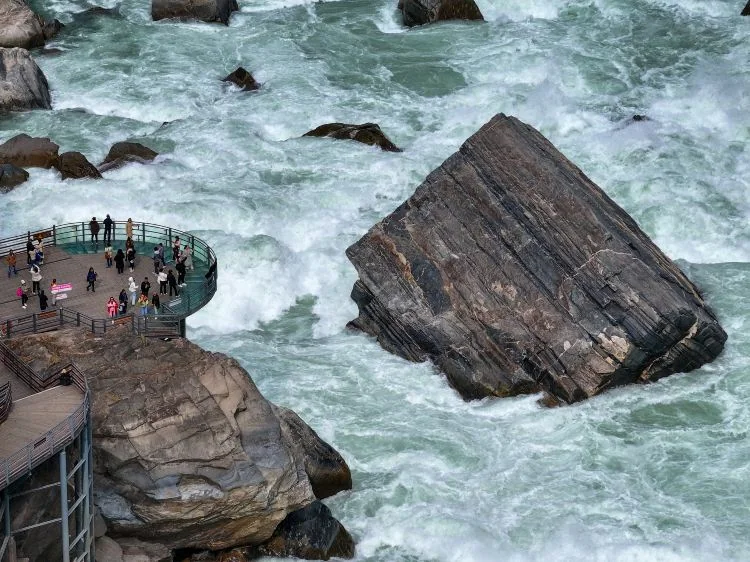
虎跳峡 · 观景版
看金沙江峡谷与观景平台，喜欢壮阔自然景观的人可以考虑，休闲观景与长线徒步需分开。
- 怎么拍
- 运动休闲穿搭，拍峡谷与平台环境照；不为拍照靠近急流、翻越围栏或离开开放步道。
- 怎么换
- 整体替换 11 月 7 日白沙日或 8 日雪山日；保留妆照的情况下，不再叠加另一条远郊线。
交通与游玩提醒
交通：预约往返包车或正规一日游，出发前确定是香格里拉一侧上虎跳景区还是丽江虎跳峡，导航、票务和开放公告不能混用。
提醒：高路徒步、下到中虎跳不是同等强度的观景玩法，需另做装备、体能和天气评估。看当日落石、雨情及景区公告，不沿未开放小路走。
高德地图 · 查看位置 ↗住宿建议
古城外围连住四晚
优先选车辆能到门口、远离酒吧噪声的位置，方便深夜抵达、工作室接送和出发去车站。三床房或两间房都要核对实际床型。
旅拍预订
个人照与闺蜜照都写清
确认三人的妆造完成时间、服装配饰、个人精修与合照数量、原片交付、外景接送、加价项目和天气改期规则。看实际客片再选造型。
两地怎么选
湖边度假，或古镇雪山
偏爱洱海、沙溪选大理；偏爱民族风妆照、白沙与雪山风景选丽江。经昆明往返时，丽江的首末日转场更长；先锁定交通，再预订酒店与拍摄。
出发前，再确认一次
西双版纳备选 · 5 天 4 晚 · 3 天完整游玩
穿上傣装，
去热带慢慢玩。
2026.11.05–11.09｜三位女生，景洪连住四晚。傣装旅拍、市区园林、热带植物各用一天，每天留出休息时间。三套方案择一，不跨城叠加。
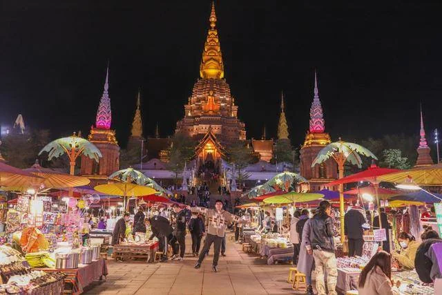
01 / 11 月 5 日 · 周四
到景洪会合，先住下来。
直达方案：各自出发地 → 西双版纳嘎洒机场 → 酒店；备选：昆明机场 → 动车出发站 → 西双版纳站 → 酒店
查看当天时间安排与交通
- 直飞若可落实
- 各自落地后网约车到景洪市区或告庄周边酒店，约 20–40 分钟。三人按最晚抵达时间会合，先到的人午餐休息。
- 昆明中转备选
- 以三人约 15:30 前抵达昆明为规划目标。会合、取行李后乘车至车票指定的昆明站或昆明南站，机场至车站按 60–90 分钟预留。
- 18:30 以后
- 若有合适可售动车，乘车约 3–4 小时到西双版纳站。动车与最晚航班落地至少间隔 3.5 小时，出发前准备简餐。
- 约 22:00–00:00
- 按实际车次到站、取行李后，网约车约 20–40 分钟至酒店，提前确认晚到入住；不约当晚旅拍。
- 仅限较早入住
- 休息后到告庄西双景吃晚饭、星光夜市短逛，看看想拍的场景。晚到就直接休息，夜市留给第二天。
交通边界 西双版纳站才是本方案的景洪接驳站，不要误买其他站。若昆明落地晚、没有合适动车，必须调整首晚住宿与次日安排，不能继续按三个完整游玩日计算。
02 / 11 月 6 日 · 周五
傣装妆照，把傍晚留给闺蜜合影。
工作室 → 告庄西双景可拍区域 → 星光夜市周边（依拍摄许可、人流与天气取舍）
查看当天时间安排与交通
- 10:00–12:00
- 慢早餐、酒店休息。前一天晚到，不安排早起打卡。
- 12:00–13:00
- 午餐后网约车至工作室，市区短途交通按约 10–30 分钟预留。
- 13:00–16:00
- 选服装、傣装妆造，每人一套。提前确认能否并行化妆以及三人全部完成的时间。
- 16:00–19:00
- 按实际日落时间和光线安排个人照、三人合照；先拍白天与傍晚，天色转暗后在同一片区补夜景，不跨区赶场。
- 19:00 以后
- 还衣服、卸妆，附近吃晚饭；夜市按状态短逛，网约车回酒店。人多时到约定上车点会合。
出片重点 三人同系列不同颜色的傣装，保留个人照和完整闺蜜合照。看真实客片区分当地傣装与创意东南亚造型，预留 5–7 小时；天气差优先改期，不把同一天再排成景点游。
03 / 11 月 7 日 · 周六
曼听与总佛寺，午后回酒店。
酒店 → 曼听御花园 → 总佛寺 → 午餐 → 酒店休息
查看当天时间安排与交通
- 09:00–10:00
- 早餐后网约车至曼听御花园，市区出发约 15–30 分钟。
- 10:00–12:00
- 园内按步行短线逛园林、建筑与水边景观，拍自己的日常穿搭。入园、开放范围与门票以当天官方信息为准。
- 12:00–13:00
- 按现场出入口与开放情况前往相邻的总佛寺。穿遮肩、过膝衣物，遵守脱鞋和拍摄提示；不在礼佛区域摆拍、不拍摄不允许拍照的位置。
- 13:00–14:00
- 附近午餐，可选香茅草烤鱼、菠萝饭等，按口味点菜。
- 14:00–17:00
- 网约车回酒店午休、喝咖啡。想补照片可在酒店允许拍照的公共区域随拍。
- 晚上
- 市区晚餐或江边短距离散步，不再加远郊景点和演出。
轻松出片 选透气、方便步行的衣服，拍园林与建筑。寺院参访以礼仪和现场管理为先；昨天的付费妆造不重复安排，给皮肤和体力留休息时间。
04 / 11 月 8 日 · 周日
热带植物园，只逛西区。
景洪酒店 → 勐仑中科院西双版纳热带植物园西区 → 酒店
查看当天时间安排与交通
- 08:30–10:00
- 早餐后预约合规包车前往植物园，单程按约 1–1.5 小时预留，具体依酒店位置和路况调整。
- 10:00–12:00
- 核对门票与西区观光车票，按园区当天线路游览棕榈、榕树等植物景观，观光车结合短段步行，不走遍全园。
- 12:00–13:00
- 园内简餐、补水、找阴凉处休息。带水与少量零食，不为拍照跳过午饭。
- 13:00–15:00
- 继续西区慢游，选开放且允许拍照的园路、树影与植物背景拍自然合照，累了提前结束。
- 15:00–16:30
- 按约定集合点乘包车回景洪酒店。
- 晚上
- 酒店附近吃傣味晚餐、整理行李。早休息，为次日返程留体力。
出片与取舍 白色、米色、浅绿色穿搭搭配热带植物，穿舒适鞋并备防晒、雨具与驱蚊用品。不保证 11 月王莲状态或特定花期，不踩踏植物、不上王莲摆拍；不加东区长线、野象谷或傣族园。
05 / 11 月 9 日 · 周一
慢早餐后，按航班各自返程。
直飞若可落实：酒店 → 嘎洒机场；昆明备选：酒店 → 西双版纳站 → 昆明站 / 昆明南站 → 长水机场
查看当天时间安排与交通
- 若从版纳晚班直飞
- 09:00 后慢早餐，酒店附近散步、买少量水果或伴手礼，中午退房后寄存行李。下午在附近咖啡馆休息，不安排远郊游览。
- 直飞送机
- 酒店至机场约 20–40 分钟，高峰另加缓冲；按各自航班倒排，至少提前 2 小时到机场。出发时间较早的人先送机，不要求三人一起等到最后。
- 经昆明：08:00–09:30
- 早餐、退房，网约车约 20–40 分钟至西双版纳站，预留安检候车时间；取消上午游览。
- 经昆明：约 10:00
- 选择动车回昆明，单程按约 3–4 小时规划，目标 14:30 前到站。具体出发时间与到达站必须以实际车票确认。
- 经昆明：14:30–16:30
- 出站后合乘网约车至长水机场，按 90–120 分钟预留候车与交通缓冲。
- 经昆明：19:00 以后
- 选择已核实可售的晚班返程航班，优先 20:00 左右起飞，至少提前 2 小时到机场；航班更早就提前坐动车，不能压缩机场缓冲。
晚点回程的前提 只有确认从嘎洒机场直飞且起飞较晚，才能保留完整休闲上午。若需坐动车回昆明，末日以交通为主；三人的方案可以不同，分别核对中转余量。
住宿建议
景洪连住，夜市外围更安静
优先告庄外围或景洪市区正规酒店，核对隔音、车辆接送点、三床房或两间房床型。避开夜市摊位和酒吧正上方，晚到提前联系酒店。
妆造预约
傣装个人照＋三人合照
明确三人化妆师配置、服装配饰、拍摄时长、个人精修与合照数量、原片、夜景是否另收费，以及选片加价、交付和雨天改期规则。
三套怎么选
热带风、湖景、雪山
傣装与热带植物选版纳，洱海和沙溪选大理，白沙与雪山选丽江。版纳这版只有植物园一天远郊出行；直飞机票合适时，首末日更容易安排休闲活动。
出发前，再确认一次